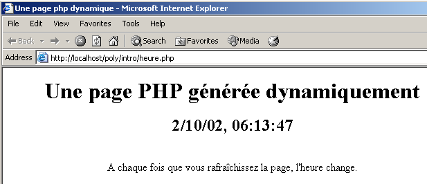
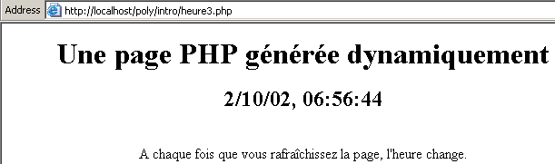

3. Introducción a la programación web en PHP
3.1. Programación en PHP
Recordemos aquí que PHP es un lenguaje por derecho propio y que, aunque se utiliza principalmente en el contexto del desarrollo de aplicaciones web, puede emplearse en otros contextos. El documento «PHP by Example», disponible en la URL http://shiva.istia.univ-angers.fr/~tahe/pub/php/php.pdf, ofrece los fundamentos del lenguaje. Damos por hecho que ya dominas estos conceptos básicos. Utilicemos un ejemplo sencillo para demostrar cómo ejecutar un programa PHP en Windows. El siguiente código se ha guardado como coucou.php.
Este programa se ejecuta en una ventana del símbolo del sistema de Windows:
dos>"e:\program files\easyphp\php\php.exe" coucou.php
X-Powered-By: PHP/4.3.0-dev
Content-type: text/html
coucou
Ten en cuenta que el intérprete de PHP envía lo siguiente por defecto:
- El intérprete de PHP es php.exe y normalmente se encuentra en el directorio <php> de la instalación del software.
- los encabezados HTTP X-Powered-By y Content-type:
- la línea en blanco que separa los encabezados HTTP del resto del documento
- el documento, que en este caso consiste en el texto escrito por la función echo
3.2. El archivo de configuración del intérprete de PHP
El comportamiento del intérprete de PHP se configura a través de un archivo de configuración llamado php.ini, que se encuentra, en Windows, dentro del propio directorio de Windows. Es un archivo bastante grande; en Windows, para la versión 4.2 de PHP, contiene casi 1.000 líneas, tres cuartas partes de las cuales, afortunadamente, son comentarios. Examinemos algunos de los ajustes de configuración de PHP:
permite incluir instrucciones entre las etiquetas <? >. Si se establece en Off, deben incluirse entre <?php ... > | |
Cuando se establece en Activado, permite el uso de la sintaxis <% =variable %> utilizada por ASP (Active Server Pages) | |
Habilita el envío del encabezado HTTP X-Powered-By: PHP/4.3.0-dev. Si se establece en Off, este encabezado se elimina. | |
Establece el alcance de los informes de errores. Aquí se informará de todos los errores (E_ALL) excepto las advertencias en tiempo de ejecución (~E_NOTICE) | |
Cuando se establece en «on», incluye los errores en la salida HTML enviada al cliente. Por lo tanto, estos se muestran en el navegador. Se recomienda establecer esta opción en «off». | |
Los errores se registrarán en un archivo | |
almacena el último error que se produjo en la variable $php_errormsg | |
Establece el archivo de registro de errores (si log_errors=on) | |
Cuando se establece en On, varias variables pasan a ser globales. Se considera un agujero de seguridad. | |
genera el encabezado HTTP predeterminado: Content-type: text/html | |
la lista de directorios en los que se buscarán los archivos requeridos por las directivas include o require | |
el directorio donde se guardarán los archivos que almacenan las distintas sesiones activas. El disco en cuestión es aquel en el que se instaló PHP. Aquí, /temp hace referencia a e:\temp |
Este archivo de configuración afecta a la portabilidad del programa PHP. De hecho, si una aplicación web necesita recuperar el valor de un campo C de un formulario web, puede hacerlo de varias maneras dependiendo de si la variable de configuración register_globals está activada o desactivada:
- off: el valor se recuperará mediante $HTTP_GET_VARS["C"], _GET["C"], $HTTP_POST_VARS["C"] o $_POST["C"], dependiendo del método (GET/POST) utilizado por el cliente para enviar los valores del formulario
- activada: igual que arriba, más $C, ya que el valor del campo C se ha convertido en global en una variable con el mismo nombre que el campo
Si un desarrollador escribe un programa utilizando la notación $C porque el servidor web/PHP que está utilizando tiene la variable register_globals activada, ese programa dejará de funcionar si se traslada a un servidor web/PHP donde esa misma variable esté desactivada. Por lo tanto, debemos intentar escribir programas que eviten el uso de características que dependan de la configuración del servidor web/PHP.
3.3. Configuración de PHP en tiempo de ejecución
Para mejorar la portabilidad de un programa PHP, puedes establecer tú mismo ciertas variables de configuración de PHP. Estas se modifican durante la ejecución del programa y solo para ese programa. Hay dos funciones útiles en este proceso:
devuelve el valor de la variable de configuración confVariable | |
establece el valor de la variable de configuración confVariable |
A continuación se muestra un ejemplo en el que establecemos el valor de la variable de configuración track_errors:
<?php
// value of the track_errors configuration variable
echo "track_errors=".ini_get("track_errors")."\n";
// change this value
ini_set("track_errors","off");
// check
echo "track_errors=".ini_get("track_errors")."\n";
?>
Al ejecutarlo, se obtienen los siguientes resultados:
E:\data\serge\web\php\poly\intro>"E:\Program Files\EasyPHP\php\php.exe" conf1.php
Content-type: text/html
track_errors=1
track_errors=off
El valor de la variable de configuración track_errors era inicialmente 1 (~activado). Lo hemos establecido en desactivado. Tenga en cuenta que, si nuestra aplicación depende de determinados valores de variables de configuración, es recomendable inicializarlos dentro del propio programa.
3.4. Contexto de ejecución de los ejemplos
Los ejemplos de este folleto se ejecutarán con la siguiente configuración:
- PC con Windows 2000
- Servidor Apache 1.3
- PHP 4.3
La configuración del servidor Apache se especifica en el archivo httpd.conf. Las siguientes líneas indican a Apache que cargue PHP como un módulo integrado y que pase cualquier solicitud de un documento con determinadas extensiones de archivo —incluida .php— al intérprete de PHP. Esta es la extensión predeterminada que utilizaremos para nuestros programas PHP.
LoadModule php4_module "E:/Program Files/EasyPHP/php/php4apache.dll"
AddModule mod_php4.c
AddType application/x-httpd-php .phtml .pwml .php3 .php4 .php .php2 .inc
Además, hemos definido un alias «poly» para Apache:
Alias "/poly/" "e:/data/serge/web/php/poly/"
<Directory "e:/data/serge/web/php/poly">
Options Indexes FollowSymLinks Includes
AllowOverride All
# Order allow,deny
Allow from all
</Directory>
Llamemos a la ruta e:/data/serge/web/php/poly <poly>. Si queremos solicitar el documento doc.php al servidor Apache utilizando un navegador, utilizaremos la URL http://localhost/poly/doc.php. El servidor Apache reconocerá el alias poly en la URL y, a continuación, asociará la URL /poly/doc.php con el documento <poly>\doc.php.
3.5. Un primer ejemplo
Escribamos nuestra primera aplicación web/PHP. El siguiente texto se guarda en el archivo heure.php:
<html>
<head>
<title>Une page php dynamique</title>
</head>
<body>
<center>
<h1>Une page PHP générée dynamiquement</h1>
<h2>
<?php
$maintenant=time();
echo date("j/m/y, h:i:s",$maintenant);
?>
</h2>
<br>
A chaque fois que vous rafraîchissez la page, l'heure change.
</body>
</html>
Si solicitamos esta página con un navegador, obtenemos el siguiente resultado:

La parte dinámica de la página fue generada por código PHP:
¿Qué ha pasado exactamente? El navegador ha solicitado la URL http://localhost/poly/intro/heure.php. El servidor web (Apache en este ejemplo) ha recibido esta solicitud y, debido a la extensión .php del documento solicitado, ha determinado que debe reenviar esta solicitud al intérprete de PHP. A continuación, el intérprete analiza el documento heure.php y ejecuta todos los segmentos de código situados entre las etiquetas <?php >, sustituyendo cada uno de ellos por las líneas escritas por las sentencias echo o print de PHP. Así, el intérprete de PHP ejecutará el segmento de código anterior y lo sustituirá por la línea escrita por la sentencia echo:
Una vez ejecutados todos los segmentos de código PHP, el documento PHP se convierte en un simple documento HTML, que a continuación se envía al cliente.
Debemos evitar mezclar código PHP y código HTML en la medida de lo posible. Con ese fin, podríamos reescribir la aplicación anterior de la siguiente manera:
<!-- code PHP -->
<?php
// on récupère l'heure du moment
$maintenant=time();
$maintenant=date("j/m/y, h:i:s",$maintenant);
?>
<!-- code HTML -->
<html>
<head>
<title>Une page php dynamique</title>
</head>
<body>
<center>
<h1>Une page PHP générée dynamiquement</h1>
<h2>
<?php echo $maintenant ?>
</h2>
<br>
A chaque fois que vous rafraîchissez la page, l'heure change.
</body>
</html>
El resultado que se muestra en el navegador es idéntico:

La segunda versión es mejor que la primera porque hay menos código PHP en el HTML. Esto hace que la estructura de la página sea más clara. Podemos ir un paso más allá colocando el código PHP y el código HTML en dos archivos separados. El código PHP se almacena en el archivo heure3.php:
<!-- code PHP -->
<?php
// retrieve the current time
$maintenant=time();
$maintenant=date("j/m/y, h:i:s",$maintenant);
// the answer is displayed
include "heure3-page1.php";
?>
El código HTML se guarda en el archivo heure3-page1.php:
<!-- code HTML -->
<html>
<head>
<title>Une page php dynamique</title>
</head>
<body>
<center>
<h1>Une page PHP générée dynamiquement</h1>
<h2>
<?php echo $maintenant ?>
</h2>
<br>
A chaque fois que vous rafraîchissez la page, l'heure change.
</body>
</html>
Cuando el navegador solicita el documento heure3.php, este se carga y es analizado por el intérprete de PHP. Al encontrar la línea
el intérprete incluirá el archivo heure3-page1.php en el código fuente de heure3.php y lo ejecutará. Por lo tanto, es como si tuviéramos el siguiente código PHP:
<!-- code PHP -->
<?php
// on récupère l'heure du moment
$maintenant=time();
$maintenant=date("j/m/y, h:i:s",$maintenant);
?>
<!-- code HTML -->
<html>
<head>
<title>Une page php dynamique</title>
</head>
<body>
<center>
<h1>Une page PHP générée dynamiquement</h1>
<h2>
<?php echo $maintenant ?>
</h2>
<br>
A chaque fois que vous rafraîchissez la page, l'heure change.
</body>
</html>
El resultado es el mismo que antes:

Más adelante se adoptará la solución de colocar el código PHP y HTML en archivos separados. Esto ofrece varias ventajas:
- la estructura de las páginas enviadas al cliente no queda oculta en el código PHP. Esto permite que sean mantenidas por un «diseñador web» con habilidades de diseño gráfico pero con conocimientos limitados de PHP.
- El código PHP actúa como una «interfaz» para las solicitudes del cliente. Su finalidad es calcular los datos necesarios para la página que se devolverá al cliente.
Sin embargo, esta solución tiene un inconveniente: en lugar de requerir la carga de un único documento, requiere la carga de varios documentos, lo que puede provocar una pérdida de rendimiento.
3.6. Recuperación de parámetros enviados por un cliente web
3.6.1. a través de un POST
Considera el siguiente formulario, en el que el usuario debe proporcionar dos datos: un nombre y una edad.

Una vez que el usuario ha rellenado los campos «Nombre» y «Edad», hace clic en el botón «Enviar». A continuación, los valores del formulario se envían al servidor. El servidor devuelve el formulario junto con una matriz que enumera los valores que ha recibido:

El navegador solicita el formulario a la siguiente aplicación nomage.php:
<?php
// do we have the expected parameters?
$post=isset($_POST["txtNom"]) && isset($_POST["txtAge"]);
if($post){
// retrieve the txtNom and txtAge parameters "posted" by the client
$nom=$_POST["txtNom"];
$age=$_POST["txtAge"];
} else {
$nom="";
$age="";
}//if
// page display
include "nomage-p1.php";
?>
Algunas explicaciones:
- Un campo de formulario HTML llamado «field» se puede enviar al servidor utilizando el método GET o el método POST. Si se envía mediante el método GET, el servidor puede recuperarlo de la variable $_GET["field"]; si se envía mediante el método POST, se puede recuperar de la variable $_POST["field"].
- La existencia de un dato se puede comprobar mediante la función isset(data), que devuelve true si el dato existe y false en caso contrario.
- La aplicación nomage.php crea tres variables: $name para el nombre del formulario, $age para la edad y $post para indicar si los valores se han «enviado» o no. Estas tres variables se pasan a la página nomage-p1.php. Tenga en cuenta que, aunque esta página participa en la generación de la respuesta al cliente, el cliente no es consciente de ello. Desde la perspectiva del cliente, es la aplicación nomage.php la que responde.
- La primera vez que un cliente solicita la aplicación nomage.php, $post se establece en false. Esto se debe a que, durante esta primera llamada, no se envían valores del formulario al servidor.
La página nomage-p1.php es la siguiente:
<html>
<head>
<title>Formulaire web</title>
</head>
<body>
<center>
<h3>Un formulaire Web</h3>
<h4>Récupération des valeurs des champs d'un formulaire</h4>
<hr>
<form name="frmPersonne" method="post">
<table>
<tr>
<td>Nom</td>
<td><input type="text" value="<?php echo $nom ?>" name="txtNom" size="20"></td>
<td>Age</td>
<td><input type="text" value="<?php echo $age ?>" name="txtAge" size="3"></td>
<tr>
</table>
<input type="submit" name="cmdEffacer" value="Envoyer">
</form>
</center>
<hr>
<?php
// y-at-il eu des valeurs postées ?
if ($post) {
?>
<h4>Valeurs récupérées</h4>
<table border="1">
<tr>
<td>Nom</td><td><?php echo $nom ?></td>
<td width="10"></td>
<td>Age</td><td><?php echo $age ?></td>
<tr>
</table>
<?php } ?>
</body>
</html>
La aplicación nomage-p1.php muestra el formulario frmPersonne. Se define mediante la etiqueta:
Dado que el atributo action de la etiqueta no está definido, el navegador enviará los datos del formulario a la URL desde la que los solicitó, es decir, la aplicación nomage.php.
Distinguamos entre los dos casos de llamada a la aplicación nomage.php:
- Esta es la primera vez que el usuario la invoca. Por lo tanto, la aplicación nomage.php invoca a la aplicación nomage-p1.php, pasándole los valores ($nom, $age, $post) = ("", "", false). A continuación, la aplicación nomage-p1.php muestra un formulario vacío.
- El usuario rellena el formulario y hace clic en el botón Enviar. A continuación, los valores del formulario (txtName, txtAge) se «envían» (method="post" en <form>) a la aplicación nomage.php (atributo action no definido en <form>). La aplicación nomage.php calcula ($name, $age, $post) = (txtName, txtAge, true) y los transmite a la aplicación nomage-p1.php, que a continuación muestra un formulario prellenado junto con la tabla de valores recuperados.
3.6.2. mediante un GET
En el caso de que los valores del formulario se envíen al servidor mediante una solicitud GET, la aplicación nomage.php se convierte en la siguiente aplicación nomage2.php:
<?php
// do we have the expected parameters?
$get=isset($_GET["txtNom"]) && isset($_GET["txtAge"]);
if($get){
// parameters txtNom and txtAge "GETTés" are retrieved by the client
$nom=$_GET["txtNom"];
$age=$_GET["txtAge"];
} else {
$nom="";
$age="";
}//if
// page display
include "nomage-p2.php";
?>
La aplicación nomage-p2.php es idéntica a la aplicación nomage-p1.php, con las siguientes diferencias menores:
- se ha modificado la etiqueta del formulario:
- la aplicación ahora recupera una variable $get en lugar de $post:
En tiempo de ejecución, cuando se introducen valores en el formulario y se envían al servidor, el navegador refleja en su campo de URL que los valores se enviaron utilizando el método GET:
3.7. Recuperación de los encabezados HTTP enviados por un cliente web
Cuando un navegador realiza una solicitud a un servidor web, envía una serie de encabezados HTTP. A veces resulta útil tener acceso a ellos. Podemos empezar utilizando la matriz asociativa $_SERVER. Esta contiene diversa información proporcionada por el servidor web, incluyendo, entre otras cosas, los encabezados HTTP enviados por el cliente. Consideremos el siguiente programa, que muestra todos los valores de la matriz $_SERVER:
<?php
// displays variables related to the web server
// send simple text
header("Content-type: text/plain");
// associative array path $_SERVER
reset($_SERVER);
while (list($clé,$valeur)=each($_SERVER)){
echo "$clé : $valeur\n";
}//while
?>
Guardemos este código en headers.php y solicitemos esta URL utilizando un navegador:

Recuperamos varios datos, incluidos los encabezados HTTP enviados por el navegador. Estos son los valores asociados a las claves que comienzan por HTTP. Analicemos parte de la información obtenida anteriormente:
tipos de documento aceptados por el cliente web | |
conjuntos de caracteres aceptados en los documentos | |
tipos de codificación aceptados para los documentos | |
tipos de idioma aceptados para los documentos | |
tipo de conexión con el servidor. Keep-Alive: el servidor debe mantener la conexión abierta tras enviar su respuesta | |
? duración máxima de la conexión | |
máquina host consultada por el cliente | |
identidad del cliente | |
dirección IP del cliente | |
puerto de comunicación utilizado por el cliente | |
protocolo HTTP utilizado por el servidor | |
método de solicitud utilizado por el cliente (GET o POST) | |
consulta ?param1=val1¶m2=val2&... añadida a la URL solicitada (método GET) |
Modificando ligeramente el código del programa anterior, podemos recuperar solo los encabezados HTTP:
<?php
// displays variables related to the web server
// send simple text
header("Content-type: text/plain");
// associative array path $_SERVER
reset($_SERVER);
while (list($clé,$valeur)=each($_SERVER)){
// header HTTP ?
if(strtolower(substr($clé,0,4))=="http")
echo substr($clé,5)." : $valeur\n";
}//while
?>
El resultado que se muestra en el navegador es el siguiente:

Si quieres un encabezado HTTP específico, escribirías, por ejemplo, $_SERVER["HTTP_ACCEPT"].
3.8. Obtención de información del entorno
El servidor web/PHP se ejecuta en un entorno al que se puede acceder a través de la matriz $_ENV, que almacena diversas características del entorno de ejecución. Considera la siguiente aplicación env1.php:
<?php
// displays variables related to the web server
// send simple text
header("Content-type: text/plain");
// associative array path $_ENV
reset($_ENV);
while (list($clé,$valeur)=each($_ENV)){
echo "$clé : $valeur\n";
}//while
?>
Esto produce el siguiente resultado en un navegador (vista parcial):

Por ejemplo, como se muestra arriba, el servidor web/PHP se ejecuta en el sistema operativo Windows NT.
3.9. Ejemplos
3.9.1. Generación dinámica de formularios - 1
Tomemos como ejemplo la generación de un formulario con un solo control: un cuadro combinado. El contenido de este cuadro combinado se construye dinámicamente utilizando valores tomados de una matriz. En la práctica, estos valores suelen recuperarse de una base de datos. El formulario es el siguiente:

Si haces clic en «Enviar» en el ejemplo anterior, obtienes la siguiente respuesta:

El código HTML del formulario inicial, una vez generado, es el siguiente:
<html>
<head>
<title>Génération de formulaire</title>
</head>
<body>
<h2>Choisissez un nombre</h2>
<hr>
<form name="frmvaleurs" method="post" action="valeurs.php">
<select name="cmbValeurs" size="1">
<option>un</option>
<option>deux</option>
<option>trois</option>
<option>quatre</option>
<option>cinq</option>
<option>six</option>
<option>sept</option>
<option>huit</option>
<option>neuf</option>
<option>dix</option>
</select>
<input type="submit" value="Envoyer" name="cmdEnvoyer">
</form>
</body>
</html>
La aplicación PHP consta de una página principal, valeurs.php, que se invoca tanto para recuperar el formulario inicial (la lista de valores) como para procesar los valores que contiene y devolver la respuesta (el valor seleccionado). La aplicación genera dos páginas diferentes:
- la página del formulario inicial, que será generada por el programa valeurs-p1.php
- la página que muestra la respuesta proporcionada al usuario, generada por el programa valeurs-p2.php
La aplicación valeurs.php es la siguiente:
<?php
// the values table
$valeurs=array("un","deux","trois","quatre","cinq","six","sept","huit","neuf","dix");
// do we have the expected parameters
$requêteVide=! isset($_POST["cmbValeurs"]);
// we retrieve the user's choice
if ($requêteVide){
// initial request
include "valeurs-p1.php";
}else{
// response to a POST
$choix=$_POST["cmbValeurs"];
include "valeurs-p2.php";
}
?>
Define la matriz de valores y llama a valeurs-p1.php para generar el formulario inicial si la solicitud del cliente estaba vacía, o a valeurs-p2.php para generar la respuesta si se recibió una solicitud válida. El programa valeurs-p1.php es el siguiente:
<html>
<head>
<title>Génération de formulaire</title>
</head>
<body>
<h2>Choisissez un nombre</h2>
<hr>
<form name="frmvaleurs" method="post" action="valeurs.php">
<select name="cmbValeurs" size="1">
<?php
for($i=0;$i<count($valeurs);$i++){
echo "<option>$valeurs[$i]</option>\n";
}//for
?>
</select>
<input type="submit" value="Envoyer" name="cmdEnvoyer">
</form>
</body>
</html>
La lista de valores del cuadro combinado se genera dinámicamente a partir de la matriz $values pasada por valeurs.php. El programa valeurs-p2.php genera la respuesta:
<html>
<head>
<title>réponse</title>
</head>
<body>
<h2>Vous avez choisi le nombre <?php echo $choix ?></h2>
</body>
</html>
Aquí, simplemente mostramos el valor de la variable $choix, que también se pasa desde valeurs.php.
3.9.2. Generación dinámica de formularios - 2
Volveremos al ejemplo anterior y lo modificaremos de la siguiente manera. El formulario sigue siendo el mismo:

Pero la respuesta es diferente:

En la respuesta, devolvemos el formulario, con el número elegido por el usuario indicado debajo. Además, este número es el que aparece como seleccionado en la lista que muestra la respuesta.
El código de valeurs.php es el siguiente:
<?php
// configuration
ini_set("register_globals","off");
// the values table
$valeurs=array("un","deux","trois","quatre","cinq","six","sept","huit","neuf","dix");
// we retrieve the user's possible choice
$choix=$_POST["cmbValeurs"];
// the answer is displayed
include "valeurs-p1.php";
?>
Ten en cuenta que aquí nos hemos preocupado de configurar PHP para que no haya variables globales. Por lo general, es una buena precaución, ya que las variables globales suponen riesgos de seguridad. Una alternativa es inicializar todas las variables que utilizamos. Esto «sobrescribirá» cualquier variable global con el mismo nombre.
La página del formulario se muestra mediante values-p1.php:
<html>
<head>
<title>Génération de formulaire</title>
</head>
<body>
<h2>Choisissez un nombre</h2>
<hr>
<form name="frmvaleurs" method="post" action="valeurs.php">
<select name="cmbValeurs" size="1">
<?php
for($i=0;$i<count($valeurs);$i++){
// si option courante est égale au choix, on la sélectionne
if (isset($choix) && $choix==$valeurs[$i])
echo "<option selected>$valeurs[$i]</option>\n";
else echo "<option>$valeurs[$i]</option>\n";
}//for
?>
</select>
<input type="submit" value="Envoyer" name="cmdEnvoyer">
</form>
<?php
// suite page
if(isset($choix)){
echo "<hr>\n";
echo "<h3>Vous avez choisi le nombre $choix</h3>\n";
}
?>
</body>
</html>
El programa generador de páginas se basa en la variable $choix pasada por el programa valeurs.php. Obsérvese aquí que la estructura HTML de la página está empezando a estar muy «saturada» de código PHP. El programa front-end valeurs.php podría encargarse de una mayor parte del trabajo, como se muestra en la siguiente nueva versión:
<?php
// configuration
ini_set("register_globals","off");
// the values table
$valeurs=array("un","deux","trois","quatre","cinq","six","sept","huit","neuf","dix");
// we retrieve the user's possible choice
$choix=$_POST["cmbValeurs"];
// calculate the list of values to be displayed
$HTMLvaleurs="";
for($i=0;$i<count($valeurs);$i++){
// if the current option is equal to the choice, it is selected
if (isset($choix) && $choix==$valeurs[$i])
$HTMLvaleurs.="<option selected>$valeurs[$i]</option>\n";
else $HTMLvaleurs.="<option>$valeurs[$i]</option>\n";
}//for
// calculate the second part of the page
$HTMLpart2="";
if(isset($choix)){
$HTMLpart2="<hr>\n";
$HTMLpart2.="<h3>Vous avez choisi le nombre $choix</h3>\n";
}//if
// the answer is displayed
include "valeurs-p2.php";
?>
La página se genera ahora mediante el siguiente programa valeurs-p2.php:
<html>
<head>
<title>Génération de formulaire</title>
</head>
<body>
<h2>Choisissez un nombre</h2>
<hr>
<form name="frmvaleurs" method="post" action="valeurs.php">
<select name="cmbValeurs" size="1">
<?php
// affichage liste de valeurs
echo $HTMLvaleurs;
?>
</select>
<input type="submit" value="Envoyer" name="cmdEnvoyer">
</form>
<?php
// affichage partie 2
echo $HTMLpart2;
?>
</body>
</html>
El código HTML ya está libre de gran parte del código PHP. Sin embargo, recordemos el propósito de dividir el sistema en un programa front-end que analiza y procesa la solicitud de un cliente y programas simplemente responsables de mostrar páginas configuradas con datos transmitidos por el front-end: se trata de separar el trabajo del desarrollador PHP del del diseñador web. El desarrollador PHP trabaja en el front-end, mientras que el diseñador web trabaja en las páginas web. En nuestra nueva versión, el diseñador web ya no puede, por ejemplo, trabajar en la parte 2 de la página, ya que ya no tiene acceso a su código HTML. En la primera versión, sí podía. Por lo tanto, ninguno de los dos métodos es perfecto.
3.9.3. Generación dinámica de formularios - 3
Volvemos a abordar el mismo problema que antes, pero esta vez los valores se recuperan de una base de datos. En nuestro ejemplo, se trata de una base de datos MySQL:
- la base de datos se llama dbValues
- su propietario es admDbValeurs con la contraseña mdpDbValeurs
- la base de datos tiene una única tabla llamada tvaleurs
- Esta tabla solo tiene un campo de tipo entero llamado «value»
dos> mysql --database=dbValeurs --user=admDbValeurs --password=mdpDbValeurs
mysql> show tables;
+---------------------+
| Tables_in_dbValeurs |
+---------------------+
| tvaleurs |
+---------------------+
1 row in set (0.00 sec)
mysql> describe tvaleurs;
+--------+---------+------+-----+---------+-------+
| Field | Type | Null | Key | Default | Extra |
+--------+---------+------+-----+---------+-------+
| valeur | int(11) | | | 0 | |
+--------+---------+------+-----+---------+-------+
mysql> select * from tvaleurs;
+--------+
| valeur |
+--------+
| 0 |
| 1 |
| 2 |
| 3 |
| 4 |
| 6 |
| 5 |
| 7 |
| 8 |
| 9 |
+--------+
10 rows in set (0.00 sec)
En una aplicación de base de datos, generalmente se siguen los siguientes pasos:
- Conexión al DBMS
- Envío de consultas SQL a una base de datos del SGBD
- Procesar los resultados de estas consultas
- Cerrar la conexión con el SGBD
Los pasos 2 y 3 se realizan repetidamente, y la conexión solo se cierra al final de las operaciones de la base de datos. Este es un patrón relativamente estándar para cualquiera que haya trabajado con una base de datos de forma interactiva. La siguiente tabla proporciona las instrucciones de PHP para realizar estas diversas operaciones con el DBMS MySQL:
$connection = mysql_pconnect($host, $user, $pwd) $connection = mysql_connect($host, $user, $pwd) $host: el nombre de host del equipo en el que se ejecuta el DBMS MySQL. Es posible trabajar con instancias remotas del DBMS MySQL. $user: el nombre de usuario reconocido por la base de datos MySQL $pwd: su contraseña $connection: la conexión creada mysql_pconnect crea una conexión persistente con el SGBD MySQL. Dicha conexión no se cierra al final del script. Permanece abierta. Por lo tanto, cuando sea necesario abrir una nueva conexión con el SGBD, PHP buscará una conexión existente que pertenezca al mismo usuario. Si encuentra una, la utilizará. Esto ahorra tiempo. mysql_connect crea una conexión no persistente, que, por lo tanto, se cierra cuando finaliza el trabajo con el SGBD MySQL. | |
$results = mysql_db_query($db, $query, $connection) $db: la base de datos MySQL con la que vas a trabajar $query: una consulta SQL (insertar, eliminar, actualizar, seleccionar, ...) $connection: la conexión al SGBD MySQL $results: los resultados de la consulta; estos varían dependiendo de si la consulta es una operación SELECT o una operación de actualización (INSERT, UPDATE, DELETE, etc.) | |
$results = mysql_db_query($db, "SELECT ...", $connection) El resultado de un SELECT es una tabla, es decir, un conjunto de filas y columnas. Se puede acceder a esta tabla a través de $results. $row = mysql_fetch_row($results) lee una fila de la tabla y la almacena en $row como una matriz. Por lo tanto, $row[i] es la i-ésima columna de la fila recuperada. La función mysql_fetch_row se puede llamar repetidamente. Cada vez, lee una nueva fila de la tabla $results. Cuando se llega al final de la tabla, la función devuelve false. Por lo tanto, la tabla $results se puede utilizar de la siguiente manera: while($row = mysql_fetch_row($results)){ // procesa la fila actual $row }//while | |
$results = mysql_db_query($db, "insert ...", $connection) El valor de $results es verdadero o falso dependiendo de si la operación se ha realizado correctamente o ha fallado. Si se realiza correctamente, la función mysql_affected_rows devuelve el número de filas modificadas por la operación de actualización. | |
mysql_close($connection) $connection: una conexión al SGBD MySQL |
El código del archivo front-end valeurs.php queda así:
<?php
// configuration
ini_set("register_globals","off");
ini_set("display_errors","off");
ini_set("track_errors","on");
// the values table
list($erreur,$valeurs)=getValeurs();
// was there a mistake?
if($erreur){
// error page display
include "valeurs-err.php";
// end
return;
}//if
// we retrieve the user's possible choice
$choix=$_POST["cmbValeurs"];
// calculate the list of values to be displayed
$HTMLvaleurs="";
for($i=0;$i<count($valeurs);$i++){
// if the current option is equal to the choice, it is selected
if (isset($choix) && $choix==$valeurs[$i])
$HTMLvaleurs.="<option selected>$valeurs[$i]</option>\n";
else $HTMLvaleurs.="<option>$valeurs[$i]</option>\n";
}//for
// calculate the second part of the page
$HTMLpart2="";
if(isset($choix)){
$HTMLpart2="<hr>\n";
$HTMLpart2.="<h3>Vous avez choisi le nombre $choix</h3>\n";
}//if
// the answer is displayed
include "valeurs-p1.php";
// end
return;
// ------------------------------------------------------------------------
function getValeurs(){
// retrieves values from a MySQL database
$user="admDbValeurs";
$pwd="mdpDbValeurs";
$db="dbValeurs";
$hote="localhost";
$table="tvaleurs";
$champ="valeur";
// open a persistent connection to the MySQL server
// or a normal connection
($connexion=mysql_pconnect($hote,$user,$pwd))
|| ($connexion=mysql_connect($hote,$user,$pwd));
if(! $connexion)
return array("Base de données indisponible(".mysql_error()."). Veuillez recommencer ultérieurement.");
// obtaining values
$selectValeurs=mysql_db_query($db,"select $champ from $table",$connexion);
if(! $selectValeurs)
return array("Base de données indisponible(".mysql_error()."). Veuillez recommencer ultérieurement.");
// the values are displayed in a table
$valeurs=array();
while($ligne=mysql_fetch_row($selectValeurs)){
$valeurs[]=$ligne[0];
}//while
// closing the connection (if it's persistent, it won't actually be closed)
mysql_close($connexion);
// result feedback
return array("",$valeurs);
}//getValeurs
?>
En esta ocasión, los valores que se van a incluir en el menú desplegable no se proporcionan mediante una matriz, sino mediante la función getValues(). Esta función:
- abre una conexión persistente (mysql_pconnect) con el servidor MySQL pasando un nombre de usuario y una contraseña registrados.
- Una vez establecida la conexión, se ejecuta una consulta SELECT para recuperar los valores de la tabla tvaleurs de la base de datos dbValeurs.
- El resultado de la consulta SELECT se coloca en la matriz $values, que se devuelve al programa que la invocó.
- En realidad, la función devuelve una matriz con dos elementos ($error, $values), donde el primer elemento es un mensaje de error si se ha producido alguno, o una cadena vacía en caso contrario.
- El programa que realiza la llamada comprueba si se ha producido un error y, en caso afirmativo, muestra la página `valeurs-err.php`. Esta página tiene el siguiente aspecto:
<html>
<head>
<title>Erreur</title>
</head>
<body>
<h3>L'erreur suivante s'est produite</h3>
<font color="red">
<h4><?php echo $erreur ?></h4>
</font>
</body>
</html>
- Si no se produjo ningún error, el programa de llamada dispone de los valores en la matriz $values. Por lo tanto, volvemos al problema anterior.
A continuación se muestran dos ejemplos de ejecución:
- con un error

- sin error

3.9.4. Generación dinámica de formularios - 4
En el ejemplo anterior, ¿qué pasaría si cambiáramos de SGBD? ¿Si pasáramos de MySQL a Oracle o SQL Server, por ejemplo? Tendríamos que reescribir la función getValues() que proporciona los valores. La ventaja de haber consolidado el código necesario para recuperar los valores que se mostrarán en la lista en una única función es que el código que requiere modificación está claramente identificado y no disperso por todo el programa. La función getValues() se puede reescribir para que sea independiente del SGBD utilizado. Simplemente tiene que trabajar con el controlador ODBC del SGBD en lugar de directamente con el propio SGBD.
Hay muchas bases de datos en el mercado. Para estandarizar el acceso a las bases de datos en MS Windows, Microsoft desarrolló una interfaz llamada ODBC (Open DataBase Connectivity). Esta capa oculta las características específicas de cada base de datos tras una interfaz estándar. Hay muchos controladores ODBC disponibles en MS Windows que facilitan el acceso a las bases de datos. Aquí, por ejemplo, hay una lista de controladores ODBC instalados en un equipo con Windows:

El SGBD MySQL también cuenta con un controlador ODBC. Una aplicación que utilice controladores ODBC puede utilizar cualquiera de las bases de datos mencionadas anteriormente sin necesidad de reescribirla.
 |
Hagamos que nuestra base de datos MySQL dbValeurs sea accesible a través de un controlador ODBC. El procedimiento que se describe a continuación es para Windows 2000. Para los sistemas Win9x, el procedimiento es muy similar. Active el Administrador de recursos ODBC:

Utilice el botón [Añadir] para añadir una nueva fuente de datos ODBC:

Seleccione el controlador ODBC de MySQL, haga clic en [Finalizar] y, a continuación, especifique las propiedades del origen de datos:

el nombre asignado al origen de datos ODBC (odbc-valeurs) | |
el nombre del equipo que aloja el SGBD MySQL que gestiona el origen de datos (localhost) | |
el nombre de la base de datos MySQL que constituye la fuente de datos (dbValues) | |
un usuario con derechos de acceso suficientes a la base de datos MySQL que se va a gestionar (admDbValeurs) | |
su contraseña (mdpDbValeurs) |
PHP es compatible con los controladores ODBC. La siguiente tabla enumera las funciones que debes conocer:
$connection = odbc_pconnect($dsn, $user, $pwd) $connection = odbc_connect($dsn, $user, $pwd) $dsn: DSN (nombre de la fuente de datos) del equipo en el que se ejecuta el SGBD $user: nombre de un usuario conocido por el DBMS $pwd: su contraseña $connection: la conexión creada odbc_pconnect crea una conexión persistente con el SGBD. Esta conexión no se cierra al final del script, sino que permanece abierta. Por lo tanto, cuando sea necesario establecer una nueva conexión con el SGBD, PHP buscará una conexión existente que pertenezca al mismo usuario. Si encuentra una, la utilizará. Esto ahorra tiempo. odbc_connect crea una conexión no persistente, que por lo tanto se cierra cuando finaliza el trabajo con el SGBD. | |
$preparedQuery = odbc_prepare($connection, $query) $query: una consulta SQL (insert, delete, update, select, ...) $connection: la conexión al SGBD Analiza la consulta $query y la prepara para su ejecución. La consulta así «preparada» se referencia mediante el resultado $preparedQuery. Preparar una consulta para su ejecución no es obligatorio, pero mejora el rendimiento, ya que la consulta solo se analiza una vez. A continuación, solicitamos la ejecución de la consulta preparada. Si solicitamos repetidamente la ejecución de una consulta no preparada, esta se analiza cada vez, lo cual es innecesario. Una vez preparada, la consulta se ejecuta mediante $res=odbc_execute($preparedQuery) devuelve true o false dependiendo de si la ejecución de la consulta tiene éxito o falla | |
El resultado de una consulta SELECT es una tabla, es decir, un conjunto de filas y columnas. Se puede acceder a esta tabla a través de $preparedQuery. $res=odbc_fetch_row($preparedQuery) lee una fila de la tabla resultante de la instrucción SELECT. Devuelve true o false dependiendo de si la ejecución de la consulta se realiza correctamente o falla. Los elementos de la fila recuperada están disponibles a través de la función odbc_result: $val=odbc_result($preparedQuery,i): columna i de la fila que se acaba de leer $val=odbc_result($preparedQuery,"columnName"): columna columnName de la fila que se acaba de leer La función odbc_fetch_row se puede llamar repetidamente. Cada vez, lee una nueva fila de la tabla de resultados. Cuando se llega al final de la tabla, la función devuelve false. Por lo tanto, la tabla de resultados se puede procesar de la siguiente manera: | |
odbc_close($conexión) $connection: una conexión al SGBD MySQL |
La función getValues(), encargada de recuperar valores de la base de datos ODBC, es la siguiente:
// ------------------------------------------------------------------------
function getValeurs(){
// récupère les valeurs dans une base MySQL
$user="admDbValeurs";
$pwd="mdpDbValeurs";
$db="dbValeurs";
$dsn="odbc-valeurs";
$table="tvaleurs";
$champ="valeur";
// ouverture d'une connexion persistante au serveur MySQL
// ou sinon d'une connexion normale
($connexion=odbc_pconnect($dsn,$user,$pwd))
|| ($connexion=odbc_connect($dsn,$user,$pwd));
if(! $connexion)
return array("1 - Base de données indisponible(".odbc_error()."). Veuillez recommencer ultérieurement.");
// obtention des valeurs
$selectValeurs=odbc_prepare($connexion,"select $champ from $table");
if(! odbc_execute($selectValeurs))
return array("2 - Base de données indisponible(".odbc_error()."). Veuillez recommencer ultérieurement.");
// les valeurs sont mises dans un tableau
$valeurs=array();
while(odbc_fetch_row($selectValeurs)){
$valeurs[]=odbc_result($selectValeurs,$champ);
}//while
// fermeture de la connexion (si elle est persistante, elle ne sera en fait pas fermée)
odbc_close($connexion);
// retour du résultat
return array("",$valeurs);
}//getValeurs
?>
Si ejecutamos la nueva aplicación sin activar la base de datos odbc-values, obtenemos el siguiente resultado:

Tenga en cuenta que el código de error devuelto por el controlador ODBC (odbc_error()=S1000) no es muy claro. Si se habilita la base de datos odbc-values, obtenemos los mismos resultados que antes.
En conclusión, podemos decir que esta solución es buena para el mantenimiento de la aplicación. De hecho, si la base de datos necesita cambiar, la aplicación en sí no tendrá que cambiar. El administrador del sistema simplemente creará una nueva fuente de datos ODBC para la nueva base de datos. De nuevo, pensando en el mantenimiento, sería una buena idea colocar los parámetros de acceso a la base de datos ($dsn, $user, $pwd) en un archivo separado que la aplicación cargaría al iniciarse (include).
3.9.5. Recuperación de valores de un formulario
Ya hemos recuperado valores de un formulario enviado por un cliente web en varias ocasiones. El siguiente ejemplo muestra un formulario que incluye los componentes HTML más comunes y está diseñado para recuperar los parámetros enviados por el navegador del cliente. El formulario es el siguiente:

Está prellenado. El usuario puede modificarlo:

Si hace clic en el botón [Enviar], el servidor devuelve la lista de valores del formulario:

El formulario es una página HTML estática llamada balises.html:
<html>
<head>
<title>balises</title>
<script language="JavaScript">
function effacer(){
alert("Vous avez cliqué sur le bouton Effacer");
}//effacer
</script>
</head>
<body background="/images/standard.jpg">
<form method="POST" action="parameters.php">
<table border="0">
<tr>
<td>Etes-vous marié(e)</td>
<td>
<input type="radio" value="oui" name="R1">Oui
<input type="radio" name="R1" value="non" checked>Non
</td>
</tr>
<tr>
<td>Cases à cocher</td>
<td>
<input type="checkbox" name="C1" value="un">1
<input type="checkbox" name="C2" value="deux" checked>2
<input type="checkbox" name="C3" value="trois">3
</td>
</tr>
<tr>
<td>Champ de saisie</td>
<td>
<input type="text" name="txtSaisie" size="20" value="qqs mots">
</td>
</tr>
<tr>
<td>Mot de passe</td>
<td>
<input type="password" name="txtMdp" size="20" value="unMotDePasse">
</td>
</tr>
<tr>
<td>Boîte de saisie</td>
<td>
<textarea rows="2" name="areaSaisie" cols="20">
ligne1
ligne2
ligne3
</textarea>
</td>
</tr>
<tr>
<td>combo</td>
<td>
<select size="1" name="cmbValeurs">
<option>choix1</option>
<option selected>choix2</option>
<option>choix3</option>
</select>
</td>
</tr>
<tr>
<td>liste à choix simple</td>
<td>
<select size="3" name="lst1">
<option selected>liste1</option>
<option>liste2</option>
<option>liste3</option>
<option>liste4</option>
<option>liste5</option>
</select>
</td>
</tr>
<tr>
<td>liste à choix multiple</td>
<td>
<select size="3" name="lst2[]" multiple>
<option selected>liste1</option>
<option>liste2</option>
<option selected>liste3</option>
<option>liste4</option>
<option>liste5</option>
</select>
</td>
</tr>
<tr>
<td>bouton</td>
<td>
<input type="button" value="Effacer" name="cmdEffacer" onclick="effacer()">
</td>
</tr>
<tr>
<td>envoyer</td>
<td>
<input type="submit" value="Envoyer" name="cmdRenvoyer">
</td>
</tr>
<tr>
<td>rétablir</td>
<td>
<input type="reset" value="Rétablir" name="cmdRétablir">
</td>
</tr>
</table>
<input type="hidden" name="secret" value="uneValeur">
</form>
</body>
</html>
La tabla siguiente resume la función de las distintas etiquetas de este documento y el valor que recupera PHP para los diferentes tipos de componentes de formulario. El valor de un campo HTML denominado C puede enviarse mediante una solicitud POST o GET. En el primer caso, se recuperará en la variable $_GET["C"], y en el segundo, en la variable $_POST["C"]. La siguiente tabla asume el uso de una solicitud POST.
Etiqueta HTML | Etiqueta HTML | Valor recuperado por PHP |
<form method="POST" > | ||
<input type="text" name="txtSaisie" size="20" value="algunas palabras"> | $_POST["txtSaisie"]: valor contenido en el campo txtSaisie del formulario | |
<input type="password" name="txtPassword" size="20" value="aPassword"> | $_POST["txtmdp"]: valor contenido en el campo txtMdp del formulario | |
<textarea rows="2" name="areaSaisie" cols="20"> línea1 línea2 línea 3 </textarea> | $_POST["areaSaisie"]: líneas contenidas en el campo areaSaisie como una sola cadena: "línea1\r\nlínea2\r\nlínea3". Las líneas están separadas por la secuencia "\r\n". | |
<input type="radio" value="Yes" name="R1">Sí <input type="radio" name="R1" value="no" checked>No | $_POST["R1"]: valor (=value) del botón de opción marcado como «sí» o «no», según corresponda. | |
<input type="checkbox" name="C1" value="uno">1 <input type="checkbox" name="C2" value="dos" checked>2 <input type="checkbox" name="C3" value="three">3 | $_POST["C1"]: valor de la casilla de verificación si está marcada; de lo contrario, la variable no existe. Por lo tanto, si la casilla de verificación C1 está marcada, $_POST["C1"] es «uno»; de lo contrario, $_POST["C1"] no existe. | |
<select size="1" name="cmbValeurs"> <option>opción1</option> <option selected>opción2</option> <option>opción3</option> </select> | $_POST["cmbValeurs"]: opción seleccionada de la lista, por ejemplo, «opción3». | |
<select size="3" name="lst1"> <option selected>lista1</option> <option>lista2</option> <option>lista3</option> <option>lista4</option> <option>lista5</option> </select> | $_POST["lst1"]: opción seleccionada de la lista, por ejemplo, «list5». | |
<select size="3" name="lst2[]" multiple> <option>lista1</option> <option>lista2</option> <option selected>list3</option> <option>lista4</option> <option>lista5</option> </select> | $_POST["lst2"]: matriz de opciones seleccionadas de la lista, por ejemplo ["list3,"list5"]. Ten en cuenta la sintaxis específica de la etiqueta HTML para este caso concreto: lst2[]. | |
<input type="hidden" name="secret" value="aValue"> | $_POST["secret"]: valor del campo, en este caso «aValue». |
En nuestro ejemplo, los valores del formulario se envían al programa parameters.php:
El código de este último es el siguiente:
<?php
// configuration
ini_set("register_globals","off");
ini_set("display_errors","off");
// call method
$méthode=$_SERVER["REQUEST_METHOD"];
// parameter recovery
// it depends on the method used to send them
if($méthode=="GET")
$param=$_GET;
else $param=$_POST;
$R1=$param["R1"];
$C1=$param["C1"];
$C2=$param["C2"];
$C3=$param["C3"];
$txtSaisie=$param["txtSaisie"];
$txtMdp=$param["txtMdp"];
$areaSaisie=implode("<br>",explode("\r\n",$param["areaSaisie"]));
$cmbValeurs=$param["cmbValeurs"];
$lst1=$param["lst1"];
$lst2=implode("<br>",$param["lst2"]);
$secret=$param["secret"];
// valid request?
$requêteValide=isset($R1) && (isset($C1) || isset($C2) || isset($C3))
&& isset($txtSaisie) && isset($txtMdp) && isset($areaSaisie)
&& isset($cmbValeurs) && isset($lst1) && isset($lst2)
&& isset($secret);
// page display
if ($requêteValide)
include "parameters-p1.php";
else include "balises.html";
?>
Analicemos algunos puntos de este programa:
- La aplicación no depende de cómo se envían los valores de los formularios al servidor. En ambos casos posibles (GET y POST), el diccionario de valores enviados se referencia mediante $param.
- Utilizando el contenido del campo «areaSaisie» («línea1\r\nlínea2\r\n...»), creamos una matriz de cadenas utilizando explode("\r\n", $param["areaSaisie"]). Ahora tenemos la matriz [línea1, línea2, ...]. A partir de ella, creamos la cadena «línea1<br>línea2<br>...» utilizando la función implode.
- El valor de la lista de selección múltiple lst2 es una matriz, por ejemplo ["option3","option5"]. A partir de ella, creamos una cadena "option3<br>option5" utilizando la función implode.
- La aplicación comprueba que se hayan establecido todos los parámetros. Es importante recordar aquí que cualquier URL puede llamarse de forma manual o mediante programación, y que los parámetros esperados pueden no estar necesariamente presentes. Si faltan parámetros, se muestra la página balises.html; de lo contrario, se muestra la página parameters-p1.php. Esta página muestra los valores recuperados y calculados en parameters.php en una matriz:
<html>
<head>
<title>Récupération des paramètres d'un formulaire</title>
</head>
<body>
<table border="1">
<tr>
<td>R1</td>
<td><?php echo $R1 ?></td>
</tr>
<tr>
<td>C1</td>
<td><?php echo $C1 ?></td>
</tr>
<tr>
<td>C2</td>
<td><?php echo $C2 ?></td>
</tr>
<tr>
<td>C3</td>
<td><?php echo $C3 ?></td>
</tr>
<tr>
<td>txtSaisie</td>
<td><?php echo $txtSaisie ?></td>
</tr>
<tr>
<td>txtMdp</td>
<td><?php echo $txtMdp ?></td>
</tr>
<tr>
<td>areaSaisie</td>
<td><?php echo $areaSaisie ?></td>
</tr>
<tr>
<td>cmbValeurs</td>
<td><?php echo $cmbValeurs ?></td>
</tr>
<tr>
<td>lst1</td>
<td><?php echo $lst1 ?></td>
</tr>
<tr>
<td>lst2</td>
<td><?php echo $lst2 ?></td>
</tr>
<tr>
<td>secret</td>
<td><?php echo $secret ?></td>
</tr>
</table>
</body>
</html>
3.10. Seguimiento de sesiones
3.10.1. El problema
Una aplicación web puede consistir en varios intercambios de formularios entre el servidor y el cliente. El proceso funciona de la siguiente manera:
Paso 1
- El cliente C1 establece una conexión con el servidor y realiza su solicitud inicial.
- El servidor envía el formulario F1 al cliente C1 y cierra la conexión establecida en el paso 1.
Paso 2
- El cliente C1 rellena el formulario y lo envía de vuelta al servidor. Para ello, el navegador abre una nueva conexión con el servidor.
- El servidor procesa los datos del formulario 1, calcula la información I1 a partir de ellos, envía el formulario F2 al cliente C1 y cierra la conexión abierta en el paso 3.
Paso 3
- El ciclo de los pasos 3 y 4 se repite en los pasos 5 y 6. Al final del paso 6, el servidor habrá recibido dos formularios, F1 y F2, y habrá calculado la información I1 e I2 a partir de ellos.
El problema que nos ocupa es: ¿cómo realiza el servidor el seguimiento de la información I1 e I2 asociada al cliente C1? Este problema se denomina seguimiento de la sesión del cliente C1. Para comprender su causa raíz, examinemos el diagrama de una aplicación de servidor TCP-IP que atiende a varios clientes simultáneamente:
 |
En una aplicación clásica de cliente-servidor TCP-IP:
- el cliente establece una conexión con el servidor
- intercambia datos con el servidor a través de esta conexión
- la conexión es cerrada por una de las dos partes
Los dos puntos clave de este mecanismo son:
- se crea una única conexión para cada cliente
- esta conexión se utiliza durante toda la duración del diálogo del servidor con su cliente
Lo que permite al servidor saber en todo momento con qué cliente está trabajando es la conexión —o, en otras palabras, el «canal»— que lo une a su cliente. Dado que este canal está dedicado a un cliente específico, todo lo que pasa por él proviene de ese cliente, y todo lo que se envía a través de él llega a ese mismo cliente.
El mecanismo cliente-servidor HTTP sigue el modelo anterior, con la excepción de que el diálogo cliente-servidor se limita a un único intercambio entre el cliente y el servidor:
- el cliente abre una conexión con el servidor y realiza su solicitud
- el servidor envía su respuesta y cierra la conexión
Si en el momento T1, un cliente C realiza una solicitud al servidor, obtiene una conexión C1 que se utilizará para el único intercambio de solicitud-respuesta. Si, en el momento T2, este mismo cliente realiza una segunda solicitud al servidor, obtendrá una conexión C2 diferente de la conexión C1. Para el servidor, no hay entonces ninguna diferencia entre esta segunda solicitud del usuario C y su solicitud inicial: en ambos casos, el servidor trata al cliente como un nuevo cliente. Para que exista un vínculo entre las diferentes conexiones del cliente C al servidor, el cliente C debe ser «reconocido» por el servidor como un «cliente habitual» y el servidor debe recuperar la información que tiene sobre este cliente habitual.
Imaginemos una agencia gubernamental que funciona de la siguiente manera:
- Hay una única cola
- Hay varios mostradores de atención. Por lo tanto, se puede atender a varios clientes simultáneamente. Cuando un mostrador queda libre, un cliente abandona la cola para ser atendido en ese mostrador
- Si es la primera visita del cliente, la persona del mostrador le entrega un ticket con un número. El cliente solo puede hacer una pregunta. Una vez que recibe la respuesta, debe abandonar el mostrador y volver al final de la cola. El empleado del mostrador registra la información del cliente en un expediente con su número.
- Cuando le vuelve a tocar el turno, es posible que el cliente sea atendido por un empleado diferente al de la vez anterior. El empleado le pide su ficha y recupera el expediente con el número de la ficha. Una vez más, el cliente realiza una solicitud, recibe una respuesta y se añade información a su expediente.
- Y así sucesivamente... Con el tiempo, el cliente recibirá respuestas a todas sus solicitudes. La conexión entre las diferentes solicitudes se mantiene a través del token y el archivo asociado a él.
El mecanismo de seguimiento de sesiones en una aplicación web cliente-servidor funciona de manera similar al ejemplo anterior:
- Al realizar su primera solicitud, el servidor web emite un token al cliente
- y presentará este token con cada solicitud posterior para identificarse
El token puede adoptar diversas formas:
- un campo oculto en un formulario
- el cliente realiza su primera solicitud (el servidor la reconoce porque el cliente no tiene token)
- El servidor envía su respuesta (un formulario) y coloca el token en un campo oculto dentro de este. En este punto, se cierra la conexión (el cliente abandona la sesión con su token). El servidor puede tener información asociada a este token.
- El cliente realiza una segunda solicitud reenviando el formulario. El servidor recupera el token del formulario. A continuación, puede procesar la segunda solicitud del cliente accediendo, a través del token, a la información calculada durante la primera solicitud. Se añade nueva información al archivo asociado al token, se envía una segunda respuesta al cliente y se cierra la conexión por segunda vez. El token se ha vuelto a colocar en el formulario de respuesta para que el usuario pueda presentarlo durante su próxima solicitud.
- Y así sucesivamente...
El principal inconveniente de esta técnica es que el token debe introducirse en un formulario. Si la respuesta del servidor no es un formulario, ya no es posible utilizar el método del campo oculto.
- El método de la cookie
- El cliente realiza su primera solicitud (el servidor lo reconoce porque el cliente no tiene token)
- El servidor responde añadiendo una cookie a los encabezados HTTP. Esto se hace utilizando el comando HTTP Set-Cookie:
Set-Cookie: param1=valor1;param2=valor2;....
donde param1, param2, etc., son nombres de parámetros y sus respectivos valores. Entre los parámetros se encontrará el token. Muy a menudo, solo se incluye el token en la cookie, y el servidor almacena el resto de la información en la carpeta asociada al token. El navegador que recibe la cookie la almacenará en un archivo en el disco. Tras la respuesta del servidor, se cierra la conexión (el cliente abandona la sesión con su token).
- (continuación)
- El cliente realiza su segunda solicitud al servidor. Cada vez que se realiza una solicitud a un servidor, el navegador comprueba entre todas las cookies que tiene para ver si tiene alguna del servidor solicitado. Si es así, la envía al servidor, siempre en forma de comando HTTP: el comando Cookie, que tiene una sintaxis similar a la del comando Set-Cookie utilizado por el servidor:
Cookie: param1=valor1;param2=valor2;....
Entre los encabezados HTTP enviados por el navegador, el servidor encontrará el token que le permite reconocer al cliente y recuperar la información asociada a él.
Esta es la forma de token más utilizada. Tiene un inconveniente: un usuario puede configurar su navegador para que rechace las cookies. En ese caso, dichos usuarios no podrán acceder a las aplicaciones web que utilizan cookies.
- Reescritura de URL
- El cliente realiza su primera solicitud (el servidor la reconoce porque el cliente no tiene token)
- El servidor envía su respuesta. Esta respuesta contiene enlaces que el usuario debe utilizar para seguir utilizando la aplicación. En la URL de cada uno de estos enlaces, el servidor añade el token en el formato URL;token=valor.
- Cuando el usuario hace clic en uno de los enlaces para seguir utilizando la aplicación, el navegador envía una solicitud al servidor web, incluyendo la URL solicitada (URL;token=valor) en los encabezados HTTP. El servidor puede entonces recuperar el token.
3.10.2. La API de PHP para el seguimiento de sesiones
A continuación, presentaremos los principales métodos útiles para el seguimiento de sesiones:
inicia la sesión a la que pertenece la solicitud actual. Si la solicitud aún no formaba parte de una sesión, se crea una. | |
identificador de la sesión actual | |
diccionario que almacena los datos de la sesión. Accesible en lectura y escritura | |
elimina los datos contenidos en la sesión actual. Estos datos siguen estando disponibles para el intercambio actual entre el cliente y el servidor, pero no estarán disponibles durante el siguiente intercambio. |
3.10.3. Ejemplo 1
Presentamos un ejemplo inspirado en el libro «Programming with J2EE», publicado por Wrox y distribuido por Eyrolles. Este ejemplo muestra cómo funciona una sesión PHP. La página principal es la siguiente:

Contiene los siguientes elementos:
- el ID de sesión obtenido mediante la función session_id(). Este ID, generado por el navegador, se envía al cliente a través de una cookie que el navegador devuelve cuando solicita una URL del mismo árbol de directorios. Esto es lo que mantiene la sesión.
- Un contador que se incrementa con cada solicitud del navegador e indica que la sesión se está manteniendo.
- Un enlace para eliminar los datos asociados a la sesión actual. Esto se realiza mediante la función session_destroy()
- Un enlace para recargar la página
El código de la aplicación cycledevie.php es el siguiente:
<?php
//cycledevie.php
// configuration
ini_set("register_globals","off");
ini_set("display_errors","off");
// start a session
session_start();
// should it be invalidated?
$action=$_GET["action"];
if($action=="invalider"){
// end of session
session_destroy();
}//if
// meter management
if(! isset($_SESSION["compteur"]))
// the counter doesn't exist - we create it
$_SESSION["compteur"]=0;
// counter exists - increment it
else $_SESSION["compteur"]++;
// retrieve the ID of the current session
$idSession=session_id();
// we retrieve the counter
$compteur=$_SESSION["compteur"];
// hand over to the visualization page
include "cycledevie-p1.php";
?>
Ten en cuenta los siguientes puntos:
- Tan pronto como se inicia la aplicación, se inicia una sesión. Si el cliente ha enviado un token de sesión, se reanuda la sesión con ese identificador y todos los datos asociados se colocan en el diccionario $_SESSION. De lo contrario, se crea un nuevo token de sesión.
- Si el cliente ha enviado un parámetro de acción con el valor «invalidate», los datos de la sesión se marcan como «por eliminar» para el siguiente intercambio. No se guardarán en el servidor al final del intercambio, a diferencia de lo que ocurre en un intercambio normal.
- Recuperamos un contador relacionado con la sesión del diccionario $_SESSION, así como el ID de sesión (session_id()).
- La página que se enviará al cliente es generada por el programa cycledevie-p1.php
La página cycledevie-p1.php muestra la página enviada al cliente:
<html>
<head>
<title>Gestion de sessions</title>
</head>
<body>
<h3>Cycle de vie d'une session PHP</h3>
<hr>
<br>ID session : <?php echo $idSession ?>
<br>compteur : <?php echo $compteur ?>
<br><a href="cycledevie.php?action=invalider">Invalider la session</a>
<br><a href="cycledevie.php">Recharger la page</a>
</body>
</html>
Fíjate en la URL asociada a cada uno de los dos enlaces:
- cycledevie.php para recargar la página
- cycledevie.php?action=invalider para invalidar la sesión. En este caso, se añade el parámetro action=invalider a la URL. El programa de servidor cycledevie.php lo recuperará mediante la instrucción $action=$_GET["action"].
Recarguemos la página dos veces seguidas:

El contador se ha incrementado efectivamente. El ID de sesión no ha cambiado. Ahora invalidemos la sesión:

Vemos que hemos perdido el ID de sesión, pero el contador se ha incrementado de nuevo. Recarguemos la página:

Vemos que volvemos a empezar con el mismo ID de sesión que antes. Sin embargo, el contador se pone a cero. Por lo tanto, la función session_destroy() no tiene un efecto inmediato. Los datos de la sesión actual se eliminan solo para el intercambio cliente-servidor que sigue al intercambio en el que se produce la eliminación. El ID de sesión no ha cambiado, lo que sugiere que session_destroy() no inicia una nueva sesión creando un nuevo ID. La cookie del token de sesión fue enviada de vuelta por el navegador del cliente, y PHP recuperó la sesión a partir de ese token, una sesión que ya no contenía ningún dato.
Las pruebas anteriores se realizaron con el navegador Netscape configurado para utilizar cookies. Ahora vamos a configurarlo para desactivar las cookies. Esto significa que no almacenará ni devolverá las cookies enviadas por el servidor. Por lo tanto, cabría esperar que las sesiones dejaran de funcionar. Probemos esto con un intercambio inicial:

Tenemos un ID de sesión, el generado por session_start(). Recarguemos la página utilizando el enlace:

Sorprendentemente, los resultados anteriores muestran que tenemos una sesión activa y que el contador se gestiona correctamente. ¿Cómo es esto posible, si las cookies están desactivadas y ya no hay intercambio de tokens entre el servidor y el navegador? La URL de la captura de pantalla anterior nos da la respuesta:
Esta es la URL del enlace «Recargar página». Comprobemos el código fuente de la página mostrada por el navegador:
<a href="cycledevie.php?action=invalider&PHPSESSID=587ce26f943a288d8f41212e30fed13c">Invalider la session</a>
<a href="cycledevie.php?PHPSESSID=587ce26f943a288d8f41212e30fed13c">Recharger la page</a>
Tenga en cuenta que el código original de los dos enlaces de la página cycledevie-p1.php es el siguiente:
<a href="cycledevie.php?action=invalider">Invalider la session</a>
<a href="cycledevie.php">Recharger la page</a>
Por lo tanto, el intérprete de PHP ha reescrito automáticamente las URL de los dos enlaces añadiendo el token de sesión. Esto garantiza que el navegador transmita correctamente el token al hacer clic en los enlaces. Esto explica por qué, incluso las cookies desactivadas, la sesión se sigue gestionando correctamente.
3.10.4. Ejemplo 3
Proponemos escribir una aplicación PHP que actúe como cliente de la aplicación contadora anterior. La llamaría N veces seguidas, donde N se pasa como parámetro. Nuestro objetivo es mostrar un cliente web programado y cómo gestionar el token de sesión. Nuestro punto de partida será un cliente web genérico llamado de la siguiente manera:
URL del cliente web GET/HEAD
- URL: URL solicitada
- GET/HEAD: GET para solicitar el código HTML de la página, HEAD para limitar la respuesta únicamente a los encabezados HTTP
A continuación se muestra un ejemplo con la URL http://localhost/poly/sessions/2/cycledevie.php. Este programa es el ya descrito, con una ligera diferencia:
// on fixe le chemin du cookie
session_set_cookie_params(0,"/poly/sessions/2");
// on démarre une session
session_start();
La función session_set_cookie_params permite establecer ciertos parámetros para la cookie que contendrá el token de sesión. El primer parámetro es la duración de la cookie. Una duración de cero significa que el navegador que recibió la cookie la eliminará al cerrarse. El segundo parámetro es la ruta de las URL a las que el navegador debe enviar la cookie. En el ejemplo anterior, si el navegador recibió la cookie desde la máquina localhost, la enviará a cualquier URL ubicada en el árbol de directorios http://localhost/poly/sessions/2/.
dos>e:\php43\php.exe clientweb.php http://localhost/poly/sessions/2/cycledevie.php GET
HTTP/1.1 200 OK
Date: Wed, 09 Oct 2002 13:58:16 GMT
Server: Apache/1.3.24 (Win32)
Set-Cookie: PHPSESSID=48d5aaa0e99850b17c33a6e22d38e5c4; path=/poly/sessions/2
Expires: Thu, 19 Nov 1981 08:52:00 GMT
Cache-Control: no-store, no-cache, must-revalidate, post-check=0, pre-check=0
Pragma: no-cache
Transfer-Encoding: chunked
Content-Type: text/html
<html>
<head>
<title>Gestion de sessions</title>
</head>
<body>
<h3>Cycle de vie d'une session PHP</h3>
<hr>
<br>ID session : 48d5aaa0e99850b17c33a6e22d38e5c4 <br>compteur : 0
<br><a href="cycledevie.php?action=invalider&PHPSESSID=48d5aaa0e99850b17c33a6e22d38e5c4">Invalid
er la session</a>
<br><a href="cycledevie.php?PHPSESSID=48d5aaa0e99850b17c33a6e22d38e5c4">Recharger la page</a>
</body>
</html>
El programa clientweb muestra todo lo que recibe del servidor. Arriba, vemos el comando HTTP Set-cookie, que el servidor utiliza para enviar una cookie a su cliente. En este caso, la cookie contiene dos datos:
- PHPSESSID, que es el token de sesión
- path, que define la URL a la que pertenece la cookie. path=/poly/sessions/2 indica al navegador que debe enviar la cookie de vuelta al servidor cada vez que solicite una URL que comience por /poly/sessions/2 desde la máquina que le envió la cookie.
- Una cookie también puede especificar una fecha de caducidad. En este caso, falta esta información. Por lo tanto, la cookie se eliminará cuando se cierre el navegador. Una cookie puede tener una fecha de caducidad de N días, por ejemplo. Mientras sea válida, el navegador la reenviará cada vez que se acceda a una de las URL de su dominio (Path). Pensemos en una tienda de CD en línea. Esta puede rastrear la ruta de navegación de un cliente a través de su catálogo y determinar gradualmente sus preferencias, por ejemplo, la música clásica. Estas preferencias pueden almacenarse en una cookie con una vida útil de 3 meses. Si ese mismo cliente vuelve al sitio después de un mes, el navegador reenviará la cookie a la aplicación del servidor. Basándose en la información contenida en la cookie, la aplicación del servidor puede entonces adaptar las páginas generadas a las preferencias del cliente.
A continuación se muestra el código del cliente web.
<?php
// configuration
dl("php_curl.dll"); // library CURL
// syntax: $0 URL GET
// you need three arguments
if($argc != 3){
// error msg
fputs(STDERR,"Syntaxe : $argv[0] URL GET/HEAD");
// stop
exit(1);
}//if
// the third argument must be GET or HEAD
$header=strtolower($argv[2]);
if($header!="get" && $header!="head"){
// error msg
fputs(STDERR,"Syntaxe : $argv[0] URL GET/HEAD");
// stop
exit(2);
}//if
// the first argument is a URL
$URL=strtolower($argv[1]);
// preparing the connection
$connexion=curl_init($URL);
// connection settings
curl_setopt($connexion,CURLOPT_HEADER,1);
if($header=="head") curl_setopt($connexion,CURLOPT_NOBODY,1);
// connection execution
curl_exec($connexion);
// closing the connection
curl_close($connexion);
// end
exit(0);
?>
El programa anterior utiliza la biblioteca CURL:
inicializa un objeto CURL con la URL a la que se va a acceder | |
establece el valor de determinadas opciones de conexión. Estas son las dos que se utilizan en el programa: CURLOPT_HEADER=1: recupera los encabezados HTTP enviados por el servidor CURLOPT_NOBODY=1: permite ignorar el documento enviado por el servidor detrás de los encabezados HTTP | |
establece una conexión con $URL con las opciones especificadas. Muestra en pantalla todo lo que envía el servidor | |
cierra la conexión |
El programa anterior es bastante sencillo. Sin embargo, la biblioteca CURL no permite una manipulación detallada de la respuesta del servidor, como analizarla línea por línea. El siguiente programa hace lo mismo que el anterior, pero utilizando las funciones de red básicas de PHP. Servirá como punto de partida para escribir un cliente para nuestra aplicación cycledevie.php.
<?php
// syntax: $0 URL GET/HEAD
// you need three arguments
if($argc != 3){
// error msg
fputs(STDERR,"Syntaxe : $argv[0] URL GET/HEAD");
// stop
exit(1);
}//if
// connection and result display
$résultats=getURL($argv[1],$argv[2]);
if(isset($résultats->erreur)){
// error
echo "L'erreur suivante s'est produite : $résultats->erreur\n";
}else{
// display server response
echo $résultats->réponse;
}//if
// end
exit(0);
//-----------------------------------------------------------------------
function getURL($URL,$header){
// connects to $URL
// makes a GET or a HEAD depending on the header value
// the server response forms the result of the
// analysis of URL
$url=parse_url($URL);
// the protocol
if(strtolower($url["scheme"])!="http"){
$résultats->erreur="l'URL [$URL] n'est pas au format http://machine[:port][/chemin]";
return $résultats;
}//if
// the machine
$hote=$url["host"];
if(! isset($hote)){
$résultats->erreur="l'URL [$URL] n'est pas au format http://machine[:port][/chemin]";
return $résultats;
}//if
// the port
$port=$url["port"];
if(! isset($port)) $port=80;
// the way
$chemin=$url["path"];
// the request
if(isset($url["query"])){
$résultats->erreur="l'URL [$URL] n'est pas au format http://machine[:port][/chemin]";
return $résultats;
}//if
// analysis of $header
$header=strtoupper($header);
if($header!="GET" && $header!="HEAD"){
// error msg
$résultats->erreur="méthode [$header] doit être GET ou HEAD";
// stop
return $résultats;
}//if
// open a connection on the $port port of $hote
$connexion=fsockopen($hote,$port,&$errno,&$erreur);
// return if error
if(! $connexion){
$résultats->erreur="Echec de la connexion au site ($hote,$port) : $erreur";
return $résultats;
}//if
// $connexion represents a bidirectional communication flow
// between the client (this program) and the contacted web server
// this channel is used for the exchange of orders and information
// the dialog protocol is HTTP
// the customer sends the get command to request URL /
// syntax get URL HTTP/1.0
// protocol HTTP headers must end with an empty line
fputs($connexion, "$header $chemin HTTP/1.0\n\n");
// the server will now respond on channel $connexion. It will send all
// then close the channel. The client therefore reads everything that arrives from $connexion
// until the channel closes
$résultats->réponse="";
while($ligne=fgets($connexion,10000))
$résultats->réponse.=$ligne;
// the customer in turn closes the connection
fclose($connexion);
// return
return $résultats;
}//getURL
?>
Comentemos algunos puntos de este programa:
- El programa acepta dos parámetros:
- una URL HTTP cuyo contenido quieras mostrar en pantalla.
- un método GET o HEAD que se va a utilizar, dependiendo de si solo se quieren los encabezados HTTP (HEAD) o también el cuerpo del documento asociado a la URL (GET).
- Ambos parámetros se pasan a la función getURL. Esta función devuelve un objeto $results. Este objeto tiene un campo error si hay un error, y un campo response en caso contrario. El campo error se utiliza para almacenar cualquier mensaje de error. El campo response contiene la respuesta del servidor web contactado.
- La función getURL analiza la URL $URL utilizando la función parse_url. La instrucción $url=parse_url($URL) crea la matriz asociativa $url con las siguientes claves posibles:
- scheme: el protocolo de la URL (http, ftp, etc.)
- host: el host de la URL
- port: el puerto de la URL
- path: la ruta de la URL
- querystring: los parámetros de la URL
Una URL es válida si tiene el formato http://machine[:puerto][/ruta].
- También se comprueba el parámetro $header
- Una vez que se han comprobado los parámetros y se ha confirmado que son correctos, se establece una conexión TCP con el servidor ($host, $port) y, a continuación, se envía la solicitud HTTP GET o HEAD, dependiendo del parámetro $header.
- A continuación, leemos la respuesta del servidor y la almacenamos en $results->response.
Al ejecutar el programa se obtienen los siguientes resultados:
dos>"e:\php43\php.exe" geturl.php http://localhost/poly/sessions/2/cycledevie.php get
HTTP/1.1 200 OK
Date: Wed, 09 Oct 2002 14:56:55 GMT
Server: Apache/1.3.24 (Win32)
Set-Cookie: PHPSESSID=ea0d2673811ed069e7289d86933a4c0a; path=/poly/sessions/2
Expires: Thu, 19 Nov 1981 08:52:00 GMT
Cache-Control: no-store, no-cache, must-revalidate, post-check=0, pre-check=0
Pragma: no-cache
Connection: close
Content-Type: text/html
<html>
<head>
<title>Gestion de sessions</title>
</head>
<body>
<h3>Cycle de vie d'une session PHP</h3>
<hr>
<br>ID session : ea0d2673811ed069e7289d86933a4c0a <br>compteur : 0
<br><a href="cycledevie.php?action=invalider&PHPSESSID=ea0d2673811ed069e7289d86933a4c0a">Invalid
er la session</a>
<br><a href="cycledevie.php?PHPSESSID=ea0d2673811ed069e7289d86933a4c0a">Recharger la page</a>
</body>
</html>
El lector atento habrá notado que la respuesta del servidor difiere según el programa cliente utilizado. En el primer caso, el servidor envió un encabezado HTTP: Transfer-Encoding: chunked, un encabezado que no se envió en el segundo caso. Esto se debe a que el segundo cliente envió el encabezado HTTP: GET HTTP/1.0, que solicita una URL e indica que está utilizando la versión 1.0 de HTTP, lo que obliga al servidor a responder utilizando el mismo protocolo. Sin embargo, el encabezado HTTP Transfer-Encoding: chunked pertenece a la versión 1.1 de HTTP. Por lo tanto, el servidor no lo utilizó en su respuesta. Esto nos indica que el primer cliente realizó su solicitud indicando que estaba utilizando la versión 1.1 de HTTP.
Ahora crearemos el programa clientCompteur, que se invoca de la siguiente manera:
clientCompteur URL N [JSESSIONID]
- URL: URL de la aplicación cycledevie
- N: número de llamadas que se realizarán a esta aplicación
- PHPSESSID: parámetro opcional — token de sesión
El objetivo del programa es llamar a la aplicación cycledevie.php N veces, gestionando la cookie de sesión y mostrando el valor del contador devuelto por el servidor en cada ocasión. Al final de las N llamadas, el valor del contador debería ser N-1. A continuación se muestra un primer ejemplo de ejecución:
dos>"e:\php43\php.exe" clientCompteur2.php http://localhost/poly/sessions/2/cycledevie.php 3
--> GET /poly/sessions/2/cycledevie.php HTTP/1.1
--> Host: localhost:80
--> Connection: close
-->
<-- HTTP/1.1 200 OK
<-- Date: Thu, 10 Oct 2002 06:27:48 GMT
<-- Server: Apache/1.3.24 (Win32)
<-- Set-Cookie: PHPSESSID=2425e00d1d65c2bdcbafc1ce6244f7ea; path=/poly/sessions/2
<-- Expires: Thu, 19 Nov 1981 08:52:00 GMT
<-- Cache-Control: no-store, no-cache, must-revalidate, post-check=0, pre-check=0
<-- Pragma: no-cache
<-- Connection: close
<-- Transfer-Encoding: chunked
<-- Content-Type: text/html
<--
[Le compteur est égal à 0]
--> GET /poly/sessions/2/cycledevie.php HTTP/1.1
--> Host: localhost:80
--> Connection: close
--> Cookie: PHPSESSID=2425e00d1d65c2bdcbafc1ce6244f7ea
-->
<-- HTTP/1.1 200 OK
<-- Date: Thu, 10 Oct 2002 06:27:48 GMT
<-- Server: Apache/1.3.24 (Win32)
<-- Expires: Thu, 19 Nov 1981 08:52:00 GMT
<-- Cache-Control: no-store, no-cache, must-revalidate, post-check=0, pre-check=0
<-- Pragma: no-cache
<-- Connection: close
<-- Transfer-Encoding: chunked
<-- Content-Type: text/html
<--
[Le compteur est égal à 1]
--> GET /poly/sessions/2/cycledevie.php HTTP/1.1
--> Host: localhost:80
--> Connection: close
--> Cookie: PHPSESSID=2425e00d1d65c2bdcbafc1ce6244f7ea
-->
<-- HTTP/1.1 200 OK
<-- Date: Thu, 10 Oct 2002 06:27:48 GMT
<-- Server: Apache/1.3.24 (Win32)
<-- Expires: Thu, 19 Nov 1981 08:52:00 GMT
<-- Cache-Control: no-store, no-cache, must-revalidate, post-check=0, pre-check=0
<-- Pragma: no-cache
<-- Connection: close
<-- Transfer-Encoding: chunked
<-- Content-Type: text/html
<--
[Le compteur est égal à 2]
El programa muestra:
- los encabezados HTTP que envía al servidor en el formato --> headerSent
- los encabezados HTTP que recibe en el formulario <-- headerReceived
- el valor del contador tras cada llamada
Podemos ver que durante la primera llamada:
- el cliente no envía una cookie
- el servidor envía una (Set-Cookie:)
Para las solicitudes posteriores:
- el cliente devuelve sistemáticamente la cookie que recibió del servidor durante la primera solicitud. Esto es lo que permite al servidor reconocerlo e incrementar su contador.
- el servidor, por su parte, ya no envía una cookie
Volvemos a ejecutar el programa anterior pasando el token anterior como tercer parámetro:
dos>"e:\php43\php.exe" clientCompteur2.php http://localhost/poly/sessions/2/cycledevie.php 1 2425e00d1d65c2bdcbafc1ce6244f7ea
--> GET /poly/sessions/2/cycledevie.php HTTP/1.1
--> Host: localhost:80
--> Connection: close
--> Cookie: PHPSESSID=2425e00d1d65c2bdcbafc1ce6244f7ea
-->
<-- HTTP/1.1 200 OK
<-- Date: Thu, 10 Oct 2002 06:32:03 GMT
<-- Server: Apache/1.3.24 (Win32)
<-- Expires: Thu, 19 Nov 1981 08:52:00 GMT
<-- Cache-Control: no-store, no-cache, must-revalidate, post-check=0, pre-check=0
<-- Pragma: no-cache
<-- Connection: close
<-- Transfer-Encoding: chunked
<-- Content-Type: text/html
<--
[Le compteur est égal à 3]
Aquí vemos que, tan pronto como el cliente realiza su primera solicitud, el servidor recibe una cookie de sesión válida. Esto puede indicar una posible vulnerabilidad de seguridad. Si soy capaz de interceptar un token de sesión en la red, puedo suplantar al usuario que inició la sesión. En nuestro ejemplo, la primera solicitud (sin token de sesión) representa al usuario que inicia la sesión (quizás con un nombre de usuario y una contraseña que le otorgan el derecho a recibir un token), y la segunda solicitud (con token de sesión) representa al usuario que ha «hackeado» el token de sesión de la primera solicitud. Si la operación actual es una transacción bancaria, esto podría resultar problemático...
El código del cliente es el siguiente:
<?php
// syntax: $0 URL N [PHPSESSID]
// you need three arguments
if($argc!=3 && $argc!=4){
// error msg
fputs(STDERR,"Syntaxe : $argv[0] URL N [PHPSESSID]");
// stop
exit(1);
}//if
// parameter recovery
$URL=$argv[1];
$N=$argv[2];
$PHPSESSID=$argv[3];
// connection and result display
$résultats=getURL($URL,$N,$PHPSESSID);
if(isset($résultats->erreur)){
// error
echo "L'erreur suivante s'est produite : $résultats->erreur\n";
}
// end
exit(0);
//-----------------------------------------------------------------------
function getURL($URL,$N,$PHPSESSID){
// connects to URL
// does a GET or a HEAD depending on the header value
// the server response forms the result of the
// analysis of URL
$url=parse_url($URL);
// the protocol
if(strtolower($url["scheme"])!="http"){
$résultats->erreur="l'URL [$URL] n'est pas au format http://machine[:port][/chemin]";
return $résultats;
}//if
// the machine
$hote=$url["host"];
if(! isset($hote)){
$résultats->erreur="l'URL [$URL] n'est pas au format http://machine[:port][/chemin]";
return $résultats;
}//if
// the port
$port=$url["port"];
if(! isset($port)) $port=80;
// the way
$chemin=$url["path"];
// the request
if(isset($url["query"])){
$résultats->erreur="l'URL [$URL] n'est pas au format http://machine[:port][/chemin]";
return $résultats;
}//if
// verification of $N
if (! preg_match("/^\d+$/",$N)){
// error
$résultats->erreur="nombre [$N] erroné";
// end
return $résultats;
}//if
// we make $N calls to $URL
for($i=0;$i<$N;$i++){
// open a connection on the $port port of $hote
$connexion=fsockopen($hote,$port,&$errno,&$erreur);
// return if error
if(! $connexion){
$résultats->erreur="Echec de la connexion au site ($hote,$port) : $erreur";
return $résultats;
}//if
// $connexion represents a bidirectional communication flow
// between the client (this program) and the contacted web server
// this channel is used for the exchange of orders and information
// the dialog protocol is HTTP
// the client sends HTTP headers
// get URL HTTP/1.1
envoie($connexion, "GET $chemin HTTP/1.1\n");
// host: host:port
envoie($connexion, "Host: $hote:$port\n");
// Connection: close
envoie($connexion, "Connection: close\n");
// Cookie: $PHPSESSID
if($PHPSESSID) envoie($connexion, "Cookie: PHPSESSID=$PHPSESSID\n");
// blank line
envoie($connexion,"\n");
// the server will now respond on channel $connexion. It will send all
// then close the channel.
// The client begins by reading HTTP headers terminated by an empty line
$CHUNKED=0;
while(($ligne=fgets($connexion,10000)) && (($ligne=rtrim($ligne))!="")){
// echo line
echo "<-- $ligne\n";
// search for the token if you haven't found it yet
if(! $PHPSESSID){
// search for set-cookie line
if(preg_match("/^Set-Cookie: PHPSESSID=(.*?);/i",$ligne,$champs)){
// the token is found - it is memorized
$PHPSESSID=$champs[1];
}//if
}//if
// search for document transfer mode
if(! $CHUNKED){
// search for Transfer-Encoding line: chunked
if(preg_match("/^Transfer-Encoding: chunked/i",$ligne,$champs)){
// piecewise transfer
$CHUNKED=1;
}//if
}//if
}//next line
// echo line
echo "<-- $ligne\n";
// reading the document depends on how it was sent
if($CHUNKED) $document=getChunkedDoc($connexion);
else $document=getDoc($connexion);
// search for counter in document
if(preg_match("/<br>compteur : (\d+)/i",$document,$champs)){
// counter found - displayed
echo "\n[Le compteur est égal à $champs[1]]\n\n";
}//if
// the customer closes the connection
fclose($connexion);
}//for i
}//getURL
//--------------------------
function getDoc($connexion){
// reading the document on $connexion
$doc="";
while($ligne=fread($connexion,10000))
$doc.=$ligne;
// end
return $doc;
}//getDoc
//--------------------------
function getChunkedDoc($connexion){
// reading the document on $connexion
// this document is sent in pieces as
// number of song characters in hexadecimal
// next part
// blank line
// read the size of the piece in the 1st line
$taille=hexdec(rtrim(fgets($connexion,10000)));
// we read the following document
$doc="";
while($taille!=0){
// playback piece of $taille characters
$doc.=fread($connexion,$taille);
// empty line
fgets($connexion,10000);
// next track
// we read the size of the piece
$taille=hexdec(rtrim(fgets($connexion,10000)));
}//while
// it's over
return $doc;
}// getChunkedDoc
//--------------------------
function envoie($flux,$msg){
// sends $msg to $flux
fwrite($flux,$msg);
// echo screen
echo "--> $msg";
}//send
?>
Analicemos los puntos clave de este programa:
- Tenemos que realizar N intercambios cliente-servidor. Por eso están en un bucle
- En cada intercambio, el cliente abre una conexión TCP/IP con el servidor. Una vez establecida la conexión, envía los encabezados HTTP de su solicitud al servidor:
<?php
...
// the client sends HTTP headers
// get URL HTTP/1.1
envoie($connexion, "GET $chemin HTTP/1.1\n");
// host: host:port
envoie($connexion, "Host: $hote:$port\n");
// Connection: close
envoie($connexion, "Connection: close\n");
// Cookie: $PHPSESSID
if($PHPSESSID) envoie($connexion, "Cookie: PHPSESSID=$PHPSESSID\n");
// blank line
envoie($connexion,"\n");
Si el token PHPSESSID está disponible, se envía como una cookie; de lo contrario, no se envía. Tenga en cuenta que el cliente indicó que estaba utilizando el protocolo HTTP/1.1. Esto explica por qué el servidor le enviará más tarde el encabezado HTTP: Transfer-Encoding: chunked, que pertenece al protocolo HTTP/1.1 pero no al protocolo HTTP/1.0.
- Una vez enviada la solicitud, el cliente espera la respuesta del servidor. Empieza por examinar los encabezados HTTP de esta respuesta. Busca dos líneas:
La línea «Cookie:» es el encabezado HTTP que contiene el token de sesión PHPSESSID. El cliente debe recuperarlo para reenviarlo al servidor durante el siguiente intercambio. Si está presente, la línea «Transfer-Encoding: chunked» indica que el servidor enviará un documento en fragmentos. A continuación, cada fragmento se envía al cliente en el siguiente formato:
Si no aparece la línea Transfer-Encoding: chunked, el documento se envía en un único fragmento tras la línea en blanco de los encabezados HTTP. Por lo tanto, dependiendo de si esta línea está presente o no, la forma en que se recibe el documento será diferente. El código para procesar los encabezados HTTP es el siguiente:
<?php
...
// The client begins by reading HTTP headers terminated by an empty line
$CHUNKED=0;
while(($ligne=fgets($connexion,10000)) && (($ligne=rtrim($ligne))!="")){
// echo line
echo "<-- $ligne\n";
// search for the token if you haven't found it yet
if(! $PHPSESSID){
// search for set-cookie line
if(preg_match("/^Set-Cookie: PHPSESSID=(.*?);/i",$ligne,$champs)){
// the token is found - it is memorized
$PHPSESSID=$champs[1];
}//if
}//if
// search for document transfer mode
if(! $CHUNKED){
// search for Transfer-Encoding line: chunked
if(preg_match("/^Transfer-Encoding: chunked/i",$ligne,$champs)){
// piecewise transfer
$CHUNKED=1;
}//if
}//if
}//next line
- Una vez que se ha encontrado el token por primera vez, ya no se buscará en las llamadas posteriores al servidor. Una vez procesados los encabezados HTTP de la respuesta, pasamos al cuerpo de la respuesta. Este se lee de forma diferente según su modo de transferencia:
<?php
...
// reading the document depends on how it was sent
if($CHUNKED) $document=getChunkedDoc($connexion);
else $document=getDoc($connexion);
- En el $document recibido, buscamos la línea que contiene el valor del contador. Esta búsqueda también se realiza utilizando una expresión regular:
<?php
...
// search for counter in document
if(preg_match("/<br>compteur : (\d+)/i",$document,$champs)){
// counter found - displayed
echo "\n[Le compteur est égal à $champs[1]]\n\n";
}//if
- Si el servidor envía el documento de una sola vez, recibirlo es sencillo:
<?php
...
//--------------------------
function getDoc($connexion){
// reading the document on $connexion
$doc="";
while($ligne=fgets($connexion,10000))
$doc.=$ligne;
// end
return $doc;
}//getDoc
- Si el servidor envía el documento en varios fragmentos, leerlo es más complejo:
<?php
...
function getChunkedDoc($connexion){
// reading the document on $connexion
// this document is sent in pieces as
// number of song characters in hexadecimal
// next part
// read the size of the piece in the 1st line
$taille=hexdec(rtrim(fgets($connexion,10000)));
// we read the following document
$doc="";
while($taille!=0){
// playback piece of $taille characters
$doc.=fread($connexion,$taille);
// blank line
fgets($connexion,10000);
// next track
// we read the size of the piece
$taille=hexdec(rtrim(fgets($connexion,10000)));
}//while
// it's over
return $doc;
}// getChunkedDoc
Recuerda que un fragmento de documento se envía en el formulario
Por lo tanto, comenzamos leyendo el tamaño del documento. Una vez conocido este, le pedimos a la función fread que lea $size caracteres del flujo $connection, seguidos de la línea en blanco que viene a continuación. Repetimos esto hasta que el servidor envíe la información de que está enviando un documento de tamaño 0.
3.10.5. Ejemplo 4
En el ejemplo anterior, el cliente web devuelve el token como una cookie. Vimos que también podría devolverlo dentro de la propia URL solicitada en el formato URL;PHPSESSID=xxx. Comprobémoslo. El programa clientCompteur.php se renombra como clientCompteur2.php y se modifica de la siguiente manera:
<?php
...
....
// the client sends HTTP headers
// get URL HTTP/1.1
if($PHPSESSID)
envoie($connexion, "GET $chemin?PHPSESSID=$PHPSESSID HTTP/1.1\n");
else envoie($connexion, "GET $chemin HTTP/1.1\n");
// host: host:port
envoie($connexion, "Host: $hote:$port\n");
// Connection: close
envoie($connexion, "Connection: close\n");
// blank line
envoie($connexion,"\n");
....
Por lo tanto, el cliente solicita la URL del contador mediante la solicitud GET URL;PHPSESSID=xx HTTP/1.1 y ya no envía una cookie. Este es el único cambio. Estos son los resultados de la primera solicitud:
dos>"e:\php43\php.exe" clientCompteur2.php http://localhost/poly/sessions/2/cycledevie.php 2
--> GET /poly/sessions/2/cycledevie.php HTTP/1.1
--> Host: localhost:80
--> Connection: close
-->
<-- HTTP/1.1 200 OK
<-- Date: Thu, 10 Oct 2002 07:21:19 GMT
<-- Server: Apache/1.3.24 (Win32)
<-- Set-Cookie: PHPSESSID=573212ba82303d7903caf8944ee7a86f; path=/poly/sessions/2
<-- Expires: Thu, 19 Nov 1981 08:52:00 GMT
<-- Cache-Control: no-store, no-cache, must-revalidate, post-check=0, pre-check=0
<-- Pragma: no-cache
<-- Connection: close
<-- Transfer-Encoding: chunked
<-- Content-Type: text/html
<--
[Le compteur est égal à 0]
--> GET /poly/sessions/2/cycledevie.php?PHPSESSID=573212ba82303d7903caf8944ee7a86f HTTP/1.1
--> Host: localhost:80
--> Connection: close
-->
<-- HTTP/1.1 200 OK
<-- Date: Thu, 10 Oct 2002 07:21:19 GMT
<-- Server: Apache/1.3.24 (Win32)
<-- Expires: Thu, 19 Nov 1981 08:52:00 GMT
<-- Cache-Control: no-store, no-cache, must-revalidate, post-check=0, pre-check=0
<-- Pragma: no-cache
<-- Connection: close
<-- Transfer-Encoding: chunked
<-- Content-Type: text/html
<--
[Le compteur est égal à 1]
En la primera solicitud, el cliente solicita la URL sin un token de sesión. El servidor responde enviando el token. A continuación, el cliente vuelve a solicitar la misma URL, añadiendo el token recibido. Podemos ver que el contador se ha incrementado efectivamente, lo que demuestra que el servidor ha reconocido correctamente que se trataba de la misma sesión.
3.10.6. Ejemplo 5
Este ejemplo muestra una aplicación compuesta por tres páginas, a las que llamaremos página1, página2 y página3. El usuario debe acceder a ellas en este orden:
- página1 es un formulario que solicita información: un nombre
- página2 es un formulario que se muestra en respuesta al envío del formulario de la página1. Solicita un segundo dato: una edad
- página3 es un documento HTML que muestra el nombre obtenido de la página1 y la edad obtenida de la página2.
Hay tres intercambios entre el cliente y el servidor:
- en el primer intercambio, el cliente solicita el formulario de la página1 y el servidor lo envía
- En el segundo intercambio, el cliente envía el formulario de la página1 (nombre) al servidor. A cambio, recibe el formulario de la página2, o el formulario de la página1 de nuevo si era incorrecto.
- En el tercer intercambio, el cliente envía el formulario de la página 2 (edad) al servidor. A cambio, recibe el formulario de la página 3, o de nuevo el formulario de la página 2 si este era incorrecto. El documento de la página 3 muestra el nombre y la edad. El nombre fue obtenido por el servidor durante el segundo intercambio y desde entonces se ha «olvidado». Se utiliza una sesión para almacenar el nombre durante el intercambio 2, de modo que esté disponible durante el intercambio 3.
La página1 obtenida durante el primer intercambio es la siguiente:

Rellene el campo del nombre:

Hacemos clic en el botón [Siguiente] y aparece la siguiente página 2:

Rellenamos el campo de la edad:

Hacemos clic en el botón [Siguiente] y se nos muestra la siguiente página3:

Cuando se envía la página 1 al servidor, este puede devolverla con un código de error si el campo «nombre» está vacío:

Cuando envíes la página 2 al servidor, este puede devolverla con un código de error si la edad no es válida:

La aplicación consta de seis programas:
llama a page1.php | |
muestra page1. El formulario de page1 es procesado por step2.php. | |
procesa los valores del formulario de la página1. Si hay errores, la página1 se vuelve a mostrar mediante page1.php; de lo contrario, la página2 se muestra mediante page2.php. | |
muestra la página2. El formulario de la página2 es procesado por etape3.php. | |
procesa los valores del formulario de la página2. Si hay errores, la página2 se vuelve a mostrar mediante page2.php; de lo contrario, se muestra la página3 mediante page3.php. | |
muestra la página3. |
El paso 1 de la aplicación se gestiona mediante el siguiente programa etape1.php:
<?php
// etape1.php
// configuration
ini_set("register_globals","off");
ini_set("display_errors","off");
// session start
session_start();
$_SESSION["session"]=""; //raz variable session
// preparation page1
$requête->nom="";
$requête->erreurs=array();
// display page1
include "page1.php";
// end
exit(0);
?>
Tenga en cuenta los siguientes puntos:
- La aplicación requiere seguimiento de sesión. Por lo tanto, cada paso de la sesión inicia una nueva sesión.
- La información de la sesión que se va a conservar se almacenará en un objeto $session.
- La información necesaria para mostrar las tres páginas de la aplicación se colocará en un objeto $request.
El programa page1.php muestra la información contenida en $request:
<? // page1.php ?>
<html>
<head>
<title>page 1</title>
</head>
<body>
<h3>Page 1/3</h3>
<form name="frmNom" method="POST" action="etape2.php">
<table>
<tr>
<td>Votre nom</td>
<td><input type="text" name="nom" value="<? echo $requête->nom ?>"></td>
</tr>
</table>
<input type="submit" value="Suite">
</form>
<? // erreurs ?
if (count($requête->erreurs)!=0){
?>
<hr>
<font color="red">
Les erreurs suivantes se sont produites
<ul>
<? for($i=0;$i<count($requête->erreurs);$i++){ ?>
<li><? echo $requête->erreurs[$i] ?>
<? }//for ?>
</ul>
<? }//if ?>
</body>
</html>
- La página recibe un objeto $request que contiene dos campos: name y errors. Muestra los valores de estos dos campos.
- También muestra un formulario. Los valores de este formulario (nombre) se envían mediante el método POST al programa etape2.php:
La aplicación etape2.php se encarga de procesar los valores del formulario de la página1 y de recargar la página1 si hay errores (nombre incorrecto); de lo contrario, muestra la página2 para recuperar la edad.
<?php
// etape2.php
// configuration
ini_set("register_globals","off");
ini_set("display_errors","off");
// session start
session_start();
// normally, you should have a name parameter
// saved in the query
$requête->nom=$_POST["nom"];
// if no parameters, page1 is sent without errors
if (! isset($requête->nom)){
$requête->nom="";
$requête->erreurs=array();
include "page1.php";
exit(0);
}//if
// if the name parameter is present - check its validity
$page=calculerPage($requête);
// were there any errors?
if(count($page->erreurs)!=0){
// page 1 with errors
$requête->erreurs=$page->erreurs;
include "page1.php";
exit(0);
}//if
// no error - name stored in session
unset($session);
$session->nom=$requête->nom;
$_SESSION["session"]=$session;
// display page 2
$requête->age="";
$requête->erreurs=array();
include "page2.php";
// end
exit(0);
// ---------calculerPage
function calculerPage($requête){
// checks the validity of the $requête request
// returns an array of errors in $page->errors
// at the start, no mistakes
$page->erreurs=array();
// the name must not be empty
if (preg_match("/^\s*$/",$requête->nom)){
$page->erreurs[]="Vous n'avez pas indiqué de nom";
}
// back to page
return $page;
}//calculerPage
?>
- El paso 2 comienza comprobando que ha recibido el parámetro «name» esperado. Si no es así, recarga una página1 vacía. Esto puede ocurrir si el paso 2 es invocado directamente por un cliente que no le pasa ningún parámetro.
- Si el parámetro `name` está presente, se comprueba su validez. Esto se hace mediante un procedimiento llamado `calculatePage`, cuya función es generar un objeto `$page` con un campo `errors` que es una matriz de errores. Solo es posible un único error, pero queríamos demostrar que podíamos gestionar una lista de errores.
- Si hay errores, se vuelve a mostrar la página1 junto con la lista de errores.
- Si no hay errores, el nombre se almacena en el objeto `$session`, que guarda los datos relacionados con la sesión actual. A continuación, se muestra la página «page2».
El programa page2.php muestra la página page2:
<? // page2.php ?>
<html>
<head>
<title>page 2</title>
</head>
<body>
<h3>Page 2/3</h3>
<form name="frmAge" method="POST" action="etape3.php">
<table>
<tr>
<td>Nom</td>
<td><font color="green"><? echo $requête->nom ?></font></td>
</tr>
<tr>
<td>Votre âge</td>
<td><input type="text" name="age" size="3" value="<? echo $requête->age ?>"></td>
</tr>
</table>
<input type="submit" value="Suite">
</form>
<? // erreurs ?
if (count($requête->erreurs)!=0){
?>
<hr>
<font color="red">
Les erreurs suivantes se sont produites
<ul>
<? for($i=0;$i<count($requête->erreurs);$i++){
echo "<li>".$requête->erreurs[$i];
}//for
?>
</ul>
</font>
<? } ?>
</body>
</html>
El concepto de esta página es muy similar al de page2.php. Muestra el contenido de un objeto $request que contiene los campos nombre, edad y errores. Muestra un formulario cuyos valores serán procesados por etape3.php.
Por lo tanto, el programa etape3.php procesa los valores del formulario de la página 2, que aquí se reducen únicamente a la edad:
<?php
// etape3.php
// configuration
ini_set("register_globals","off");
ini_set("display_errors","off");
// session start
session_start();
// retrieve name and age parameters
$requête->age=$_POST["age"];
$session=$_SESSION["session"];
$requête->nom=$session->nom;
// normally, you must have a name and age
if (! isset($requête->age) || ! isset($requête->nom)){
// if wrong call, send page1
$_SESSION["session"]=""; // as a precaution
$requête->nom="";
$requête->erreurs=array();
include "page1.php";
exit(0);
}//if
// the age parameter is present - check its validity
$page=calculerPage($requête);
// were there any errors?
if(count($page->erreurs)!=0){
// page 2 with errors
$requête->erreurs=$page->erreurs;
include "page2.php";
exit(0);
}//if
// no errors - age memorized in session
$session->age=$requête->age;
$_SESSION["session"]=$session;
// display page 3
include "page3.php";
// end
exit(0);
// ---------calculerPage
function calculerPage($requête){
// checks the validity of the $requête request
// returns an array of errors in $page->errors
// at the start, no mistakes
$page->erreurs=array();
// age must have a valid format
if (! preg_match("/^\s*\d{1,3}\s*$/",$requête->age)){
$page->erreurs[]="âge incorrect";
}
// back to page
return $page;
}//calculerPage
?>
- El programa comienza recuperando el nombre de la sesión (de la página 1) y la edad del formulario de la página 2. Si falta alguno de estos datos, se muestra la página 1.
- A continuación, se valida la edad. Si la edad es incorrecta, se vuelve a mostrar la página 2 con una lista de errores. Si la edad es correcta, se muestra la página 3. Esta página simplemente muestra los dos valores (nombre, edad) obtenidos de los dos formularios (página 1, página 2).